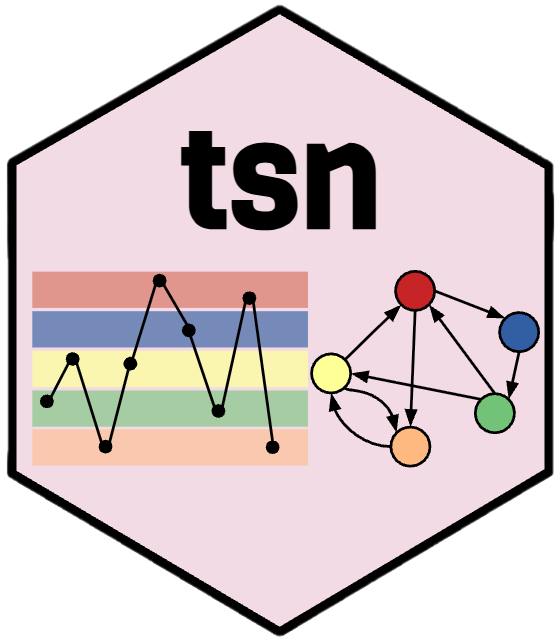

Building a Model from a Time Series and Testing It with Nestimate
tsn package authors
Source:vignettes/nestimate-workflow.Rmd
nestimate-workflow.RmdWhat this vignette does
A time series is a sequence of numbers. A transition network is a model of how a system moves between states. This vignette covers the whole distance between them: it turns a series into states, estimates a transition-network model, and then submits that model to the inferential machinery in Nestimate — bootstrap confidence intervals, centrality stability, a Markov-order test, and a permutation test comparing two periods.
From measurements to a model
ts_tna() takes a data frame and the name of one numeric
column, cuts that column into states, and estimates the transition
network in a single call. Here it runs on the first 200 observations of
the pleasure rating from the motivation
study.
pleasure <- head(motivation, 200)
model <- ts_tna(
pleasure,
series = "pleasure",
labels = c("low", "mid", "high")
)
model
#> Transition Network (relative probabilities) [directed]
#> Weights: [0.278, 0.417] | mean: 0.333
#>
#> Weight matrix:
#> low mid high
#> low 0.403 0.313 0.284
#> mid 0.278 0.417 0.306
#> high 0.333 0.367 0.300
#>
#> Initial probabilities:
#> high 1.000 ████████████████████████████████████████
#> low 0.000
#> mid 0.000The printed object is the whole model: a row-stochastic weight matrix in which entry (i, j) is the probability of moving to state j given that the system is currently in state i, together with the initial-state distribution.
The bridge: this object is a Nestimate model
Everything that follows rests on one fact.
class(model)
#> [1] "ts_tna" "netobject" "cograph_network"ts_tna() does not return a private structure that has to
be converted. It returns an object inheriting from
netobject, which is Nestimate’s core
network class, and Nestimate’s verbs dispatch on that class. There is no
export step and no adapter call in between.
Four constructors, one interface
The same discretized sequence supports four definitions of an edge,
and all four constructors take identical arguments and return the same
class. ts_tna() gives relative frequencies, so an edge is
the probability of the next state. ts_ftna() gives the raw
transition counts behind those probabilities. ts_atna()
applies attention weighting, and ts_cna() counts undirected
co-occurrence rather than directed movement.
Swapping the constructor is the only change required.
ts_ftna(pleasure, series = "pleasure", labels = c("low", "mid", "high"))
#> Transition Network (frequency counts) [directed]
#> Weights: [18.000, 30.000] | mean: 22.111
#>
#> Weight matrix:
#> low mid high
#> low 27 21 19
#> mid 20 30 22
#> high 20 22 18
#>
#> Initial probabilities:
#> high 1.000 ████████████████████████████████████████
#> low 0.000
#> mid 0.000The rest of this vignette uses ts_tna(), because
probabilities are what the inferential tests are written for.
One series, and what it can support
Ask a single-series model for a bootstrap and Nestimate objects:
A network with one long sequence is not recommended and can’t be validated using bootstrap and other confirmatory testings.
The warning is correct as stated. A bootstrap resamples sequences to ask how far the estimate would move under a different sample of them, and one series is one sequence: nothing to resample, no sampling distribution. The permutation and stability tests rest on the same logic.
That is a statement about the unit of analysis, though, not
a dead end. A long series contains many transitions; what it lacks is a
way to group them into units that can be resampled. segment
supplies that by cutting the series into shorter blocks, each treated as
its own sequence. This is the block bootstrap, and tsn
offers both of its standard forms.
The series below is one participant’s 299 daily step counts. Two
things about the call are worth noting before the segmenting itself.
States are cut at 5,000 and 10,000 steps with
discretization = "threshold" rather than at the default
tertiles, so that they mean something outside this sample — the next
section returns to why that matters. And segmentation is applied
after discretization, so every block inherits the same cut
points; blocks are never discretized against themselves.
walkers <- subset(steps, !is.na(steps))
one_walker <- subset(walkers, id == 193)
whole <- ts_tna(
one_walker,
value = "steps",
time = "day",
discretization = "threshold",
breaks = c(5000, 10000),
labels = c("sedentary", "moderate", "active")
)segment = 10 partitions the 299 observations into
consecutive blocks of ten.
blocks <- ts_tna(
one_walker,
value = "steps",
time = "day",
segment = 10,
discretization = "threshold",
breaks = c(5000, 10000),
labels = c("sedentary", "moderate", "active")
)
bootstrap_network(blocks, iter = 500, seed = 2024)
#> Edge Mean 95% CI p
#> -----------------------------------------------
#> active → moderate 0.558 [0.457, 0.653] **
#> moderate → moderate 0.437 [0.336, 0.525] *
#>
#> Bootstrap Network [Transition Network (relative) | directed]
#> Iterations : 500 | Nodes : 3
#> Edges : 2 significant / 9 total
#> CI : 95% | Inference: stability | CR [0.75, 1.25]Thirty sequences, and the bootstrap runs without complaint. Partitioning is not free: every cut destroys the transition that straddles it, so thirty blocks cost roughly thirty of the 298 transitions and the estimate shifts slightly.
Sliding the window instead keeps all of them. At
segment = 2, overlap = TRUE the blocks are the consecutive
lag-1 pairs — every transition appears exactly once, so the network is
identical to the unsegmented one.
lag_one <- ts_tna(
one_walker,
value = "steps",
time = "day",
segment = 2,
overlap = TRUE,
discretization = "threshold",
breaks = c(5000, 10000),
labels = c("sedentary", "moderate", "active")
)
all.equal(as.matrix(lag_one), as.matrix(whole))
#> [1] TRUE
bootstrap_network(lag_one, iter = 500, seed = 2024)
#> Edge Mean 95% CI p
#> -----------------------------------------------
#> active → moderate 0.559 [0.459, 0.659] **
#> moderate → moderate 0.426 [0.344, 0.504] **
#> moderate → active 0.359 [0.285, 0.439] *
#>
#> Bootstrap Network [Transition Network (relative) | directed]
#> Iterations : 500 | Nodes : 3
#> Edges : 3 significant / 9 total
#> CI : 95% | Inference: stability | CR [0.75, 1.25]So which to use? The sliding blocks preserve the estimate exactly and give the most units, and their intervals come out narrower — narrow enough here to call a third edge significant where the partitioned blocks call two. That narrowness is the catch: overlapping blocks share observations, so they are not independent, and resampling lag-1 pairs assumes precisely the first-order Markov property the model itself assumes. The Markov-order test later in this vignette finds that assumption does not hold here — so those intervals are optimistic.
Partitioned blocks are the more conservative choice. A block preserves whatever dependence exists inside it, so structure beyond one lag survives resampling, and you pay for that in lost boundary transitions. Blocks of 10 to 30 keep 90% to 97% of the transitions, which is usually the right trade; blocks of 2 keep only half and should be avoided.
None of this manufactures information. Segmenting a single series lets you ask how stable that person’s own dynamics are, and nothing more — it says nothing about anyone else. For a claim about people in general you need people in general, so the rest of this vignette uses all 151 of them.
Choosing states that mean something
The default discretization = "quantile" cuts at the
tertiles, which forces the three states to hold a third of the
observations each — so the state sizes carry no information, by
construction. That is why every model here uses the fixed 5,000 and
10,000 step thresholds instead. Beyond making the states interpretable,
fixed breaks give every model in this vignette one shared
alphabet, which is what makes the group comparison at the end
legitimate.
walk_model <- ts_tna(
walkers,
value = "steps",
id = "id",
time = "day",
discretization = "threshold",
breaks = c(5000, 10000),
labels = c("sedentary", "moderate", "active")
)
walk_model
#> Transition Network (relative probabilities) [directed]
#> Weights: [0.062, 0.619] | mean: 0.333
#>
#> Weight matrix:
#> sedentary moderate active
#> sedentary 0.353 0.445 0.202
#> moderate 0.154 0.501 0.345
#> active 0.062 0.320 0.619
#>
#> Initial probabilities:
#> active 0.576 ████████████████████████████████████████
#> moderate 0.311 ██████████████████████
#> sedentary 0.113 ████████Now the states mean something outside the data, the same cut points apply to every comparison made later, and the distribution is worth reading.
state_distribution(walk_model)
#> group state count proportion
#> 1 all active 13921 0.4484425
#> 2 all moderate 12776 0.4115582
#> 3 all sedentary 4346 0.1399994Every state is strongly self-preferring, and an active day is the most persistent of all at 0.62. Step counts are sticky.
One network per person
The pooled model estimates a single network across everyone.
series_networks() splits it back into one complete model
per participant, each rebuilt on the same alphabet so node sets stay
aligned and comparable.
per_person <- series_networks(walk_model)
head(summary(per_person))
#> series type observations states edges
#> 1 35 tna 295 3 6
#> 2 37 tna 278 3 9
#> 3 47 tna 297 3 9
#> 4 57 tna 239 3 9
#> 5 58 tna 176 3 9
#> 6 70 tna 257 3 9Each row is a full ts_tna model that prints and plots on
its own. Because the cut points here are fixed step counts rather than
sample quantiles, a participant’s personal network describes their own
activity, not their rank within the sample.
Describing the model
Centrality
net_centrality(walk_model)
#> centralities computed excluding loops (diagonal). Pass `loops = TRUE` to include self-transitions.
#> state InStrength Betweenness Diffusion
#> sedentary sedentary 0.2152510 0 1.0000000
#> moderate moderate 0.7650336 1 0.4116171
#> active active 0.5470912 0 0.0000000Note the message: centralities exclude self-transitions by default.
That matters for a transition network, where the diagonal is usually the
largest entry — a state can be highly persistent while receiving little
traffic from elsewhere. Pass loops = TRUE to include the
diagonal.
How much of the sequence is structure, and how much is noise
transition_entropy(walk_model)
#> Transition Entropy (3 states, bits; ceiling = 1.585)
#>
#> raw normalised
#> Entropy rate h(P) = 1.346 bits 0.849
#> Stationary H(pi) = 1.444 bits 0.911
#> Redundancy H(pi)-h = 0.098 bits 0.068
#>
#> Normalised: h(P) and H(pi) are raw / log_2(n_states) (0 = deterministic, 1 = uniform);
#> redundancy is the relative redundancy (H(pi) - h(P)) / H(pi), not raw / log_2(n_states).The entropy rate is normalised against log2(n_states),
so 0 is a perfectly deterministic process and 1 means the current state
tells you nothing about the next. These same step counts cut at the
tertiles score 0.93; cut at 5,000 and 10,000 they score 0.85. Cut points
are not a cosmetic choice — they decide how much structure there is left
to find.
Pruning
Not every edge deserves to be in the picture.
net_prune() returns a model of the same class with weak
edges removed, so it flows straight back into any verb above.
net_prune(walk_model, method = "threshold", threshold = 0.3)
#> Transition Network (relative probabilities) [directed]
#> Weights: [0.320, 0.619] | mean: 0.430
#>
#> Weight matrix:
#> sedentary moderate active
#> sedentary 0.353 0.445 0.000
#> moderate 0.000 0.501 0.345
#> active 0.000 0.320 0.619
#>
#> Initial probabilities:
#> active 0.576 ████████████████████████████████████████
#> moderate 0.311 ██████████████████████
#> sedentary 0.113 ████████Three edges fall below the threshold: every route into
sedentary from a higher state, plus the direct leap from sedentary to
active. What survives says that a sedentary day is harder to fall into
than to climb out of — sedentary -> moderate is a strong
0.445, while nothing descends into sedentary above 0.3.
Prune after testing rather than before, though: a threshold sorts edges by size, and size is not the same thing as interest.
Bootstrap: which edges survive resampling?
boot <- bootstrap_network(walk_model, iter = 200, seed = 2024)
boot
#> Edge Mean 95% CI p
#> -----------------------------------------------
#> active → active 0.618 [0.585, 0.648] **
#> moderate → moderate 0.500 [0.478, 0.523] **
#> sedentary → moderate 0.444 [0.419, 0.469] **
#> sedentary → sedentary 0.353 [0.323, 0.386] **
#> moderate → active 0.346 [0.318, 0.373] **
#> ... and 4 more significant edges
#>
#> Bootstrap Network [Transition Network (relative) | directed]
#> Iterations : 200 | Nodes : 3
#> Edges : 9 significant / 9 total
#> CI : 95% | Inference: stability | CR [0.75, 1.25]summary() returns the tidy, one-row-per-edge table.
summary(boot)
#> from to weight mean sd p_value sig
#> 1 sedentary sedentary 0.35281837 0.35345581 0.016363187 0.004975124 TRUE
#> 2 sedentary moderate 0.44514034 0.44378997 0.012517516 0.004975124 TRUE
#> 3 sedentary active 0.20204129 0.20275421 0.012723224 0.004975124 TRUE
#> 4 moderate sedentary 0.15365259 0.15382362 0.008219952 0.004975124 TRUE
#> 5 moderate moderate 0.50129748 0.50036003 0.011436886 0.004975124 TRUE
#> 6 moderate active 0.34504993 0.34581635 0.014524197 0.004975124 TRUE
#> 7 active sedentary 0.06159838 0.06212676 0.005251614 0.014925373 TRUE
#> 8 active moderate 0.31989325 0.31996300 0.011000596 0.004975124 TRUE
#> 9 active active 0.61850837 0.61791024 0.014531904 0.004975124 TRUE
#> ci_lower ci_upper cr_lower cr_upper
#> 1 0.32318763 0.3856584 0.26461378 0.44102296
#> 2 0.41903064 0.4688517 0.33385525 0.55642542
#> 3 0.17664549 0.2244967 0.15153097 0.25255161
#> 4 0.13841919 0.1697292 0.11523944 0.19206574
#> 5 0.47778672 0.5230883 0.37597311 0.62662184
#> 6 0.31847498 0.3727507 0.25878745 0.43131242
#> 7 0.05314263 0.0738917 0.04619879 0.07699798
#> 8 0.29783560 0.3433023 0.23991994 0.39986656
#> 9 0.58489465 0.6482990 0.46388128 0.77313546With 151 sequences behind it every edge is estimated precisely and all nine survive. Confidence intervals a few hundredths wide are what a large sample buys.
Stability: would the same states rank first in a smaller study?
centrality_stability() repeatedly drops a proportion of
the sequences, re-computes the centralities, and reports the largest
proportion that can be dropped while the ordering still tracks the
original.
centrality_stability(walk_model, iter = 100)
#> Centrality Stability (100 iterations, threshold = 0.7)
#> Drop proportions: 0.1, 0.2, 0.3, 0.4, 0.5, 0.6, 0.7, 0.8, 0.9
#>
#> CS-coefficients:
#> InStrength 0.90
#> OutStrength 0.90
#> Betweenness 0.90The usual convention is that 0.5 is acceptable and 0.7 excellent, so these orderings are trustworthy.
Markov order: is a first-order model enough?
Every transition network here assumes the Markov property — that the next state depends on the current one and nothing earlier. That assumption is testable.
markov_order_test(walk_model)
#> Markov Order Test [within-w permutation, n_perm = 500, alpha = 0.050]
#> 151 sequences / 31043 observations / 3 states
#>
#> Selected order BIC: 3 AIC: 3 permutation-LRT: 3
#>
#> order loglik AIC BIC df g2 p_permutation p_asymptotic
#> 0 -31051.63 62107.27 62123.95 NA NA NA NA
#> 1 -28961.91 57939.82 58006.57 4 4179.40 0.001996008 0.000000e+00
#> 2 -28209.20 56470.40 56687.32 12 1505.37 0.001996008 2.624960e-315
#> 3 -27901.81 55963.62 56631.07 36 614.68 0.001996008 1.933327e-106
#> significant
#> NA
#> TRUE
#> TRUE
#> TRUEThe test disagrees with the model. AIC, BIC and the permutation LRT all prefer a higher order, meaning yesterday carries information about tomorrow beyond today. This does not invalidate the first-order network, but it bounds what it may claim: a summary of one-step behaviour, not a full description of the process.
The natural follow-up is a higher-order network.
build_hon(walk_model, max_order = 2)
#> Higher-Order Network (HON)
#> Nodes: 3 (3 first-order states)
#> Edges: 9
#> Max order: 1 (requested 2)
#> Min freq: 1
#> Trajectories: 151HON’s own promotion rule keeps every node at order 1 — it finds no individual context that shifts the next-step distribution enough to justify splitting. Two criteria disagreeing is a real result rather than a bug: the likelihood test sees aggregate improvement across all sequences, while HON asks a stricter per-node question. Report both.
Comparing two periods
The tests so far describe one network. permutation()
compares two, shuffling the group labels to build a null distribution
for every edge. The steps series runs from April 2019 to
March 2020, so splitting at the start of November contrasts a summer
half with a winter half.
Both models are built with the same fixed breaks, which
matters more than it looks: had each period been discretized on its own
quantiles, the two networks would sit on different cut points and any
difference between them could be an artefact of the thresholds rather
than of behaviour.
cutoff <- as.Date("2019-11-01")
early <- ts_tna(
subset(walkers, as.Date(day) < cutoff),
value = "steps",
id = "id",
time = "day",
discretization = "threshold",
breaks = c(5000, 10000),
labels = c("sedentary", "moderate", "active")
)
late <- ts_tna(
subset(walkers, as.Date(day) >= cutoff),
value = "steps",
id = "id",
time = "day",
discretization = "threshold",
breaks = c(5000, 10000),
labels = c("sedentary", "moderate", "active")
)
comparison <- permutation(early, late, iter = 2000, seed = 2024)
comparison
#> Permutation Test:Transition Network (relative probabilities) [directed]
#> Iterations: 2000 | Alpha: 0.05
#> Nodes: 3 | Edges tested: 9 | Significant: 0
summary(comparison)
#> from to weight_x weight_y diff effect_size p_value
#> 1 sedentary sedentary 0.34985280 0.35525154 -0.005398748 -0.18420352 0.86406797
#> 2 sedentary moderate 0.44602552 0.44395410 0.002071411 0.08267605 0.93753123
#> 3 sedentary active 0.20412169 0.20079435 0.003327337 0.15848152 0.88655672
#> 4 moderate sedentary 0.14430829 0.16225831 -0.017950026 -1.26222133 0.20589705
#> 5 moderate moderate 0.50048371 0.50224285 -0.001759131 -0.09494720 0.91554223
#> 6 moderate active 0.35520800 0.33549884 0.019709158 0.87706971 0.38030985
#> 7 active sedentary 0.05810102 0.06593238 -0.007831364 -0.93700923 0.35282359
#> 8 active moderate 0.30333977 0.33761664 -0.034276870 -1.78233216 0.07196402
#> 9 active active 0.63855921 0.59645097 0.042108234 1.75491892 0.07946027
#> sig
#> 1 FALSE
#> 2 FALSE
#> 3 FALSE
#> 4 FALSE
#> 5 FALSE
#> 6 FALSE
#> 7 FALSE
#> 8 FALSE
#> 9 FALSENot one of the nine edges differs. That is a real finding, and a more interesting one than a scattering of small p-values would have been, because the two periods are not alike in how much people walked:
state_distribution(early)
#> group state count proportion
#> 1 all active 7328 0.4689620
#> 2 all moderate 6253 0.4001664
#> 3 all sedentary 2045 0.1308716
state_distribution(late)
#> group state count proportion
#> 1 all active 6593 0.4276448
#> 2 all moderate 6523 0.4231044
#> 3 all sedentary 2301 0.1492508Active days fall from 46.9% of the summer half to 42.8% of the winter half, and sedentary days rise. The seasonal effect is real — it simply lives in the composition of the states, not in the transitions between them. Someone who has a sedentary day in January is no less likely to return to a moderate day than they were in July.
That distinction is the reason to build a transition network at all. A comparison of means or of state proportions finds the seasonal difference and stops there; the transition model shows that the underlying dynamics are unchanged, which is a different claim about the same people.
Where the line falls
Everything descriptive in this vignette — centralities, state distributions, entropy, pruning, per-participant splits — runs on a model built from a single series. Everything inferential — bootstrap, stability, the Markov-order test and the permutation test — needs many sequences, because resampling and permutation both treat the sequence as the unit of analysis.
Build with id from the start if you intend to test
anything, and fix your breaks before you compare
groups.